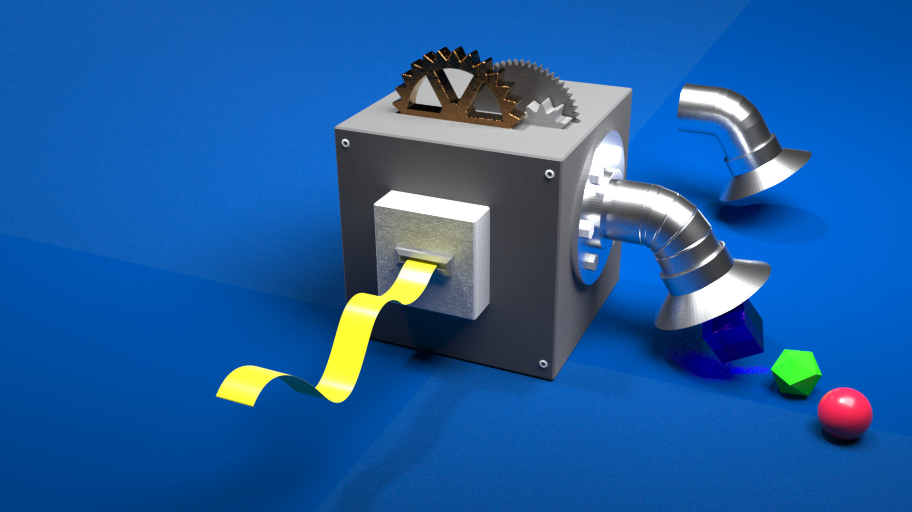

Abstract
Our goal is to realize a device which is able to generate different DNA strands in a
given arbitrary order. The device consists of a tape and a black box. The tape is a long
single-stranded DNA which describes the order of the output. There is no limitation in the
length of the tape. The black box is a set of molecules that reads out the information on
the tape to generate corresponding output strands. To achieve this, we have designed
a reaction network by using DNA computing. When the tape is put in the box (e.g. a test
tube containing the molecules), a section on its 3'-end is read and corresponding output
is produced. When the concentration of the output reaches the threshold, the tape strand
is updated though disabling the first section and enabling the next section. By repeating
this, we can program various complex molecular reactions such as sequential assembly of
nanostructures and behavior control of molecular robots.